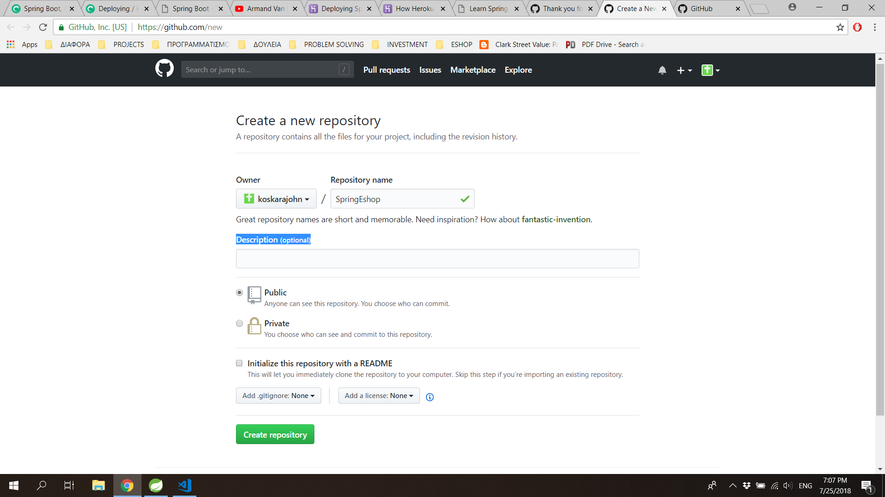
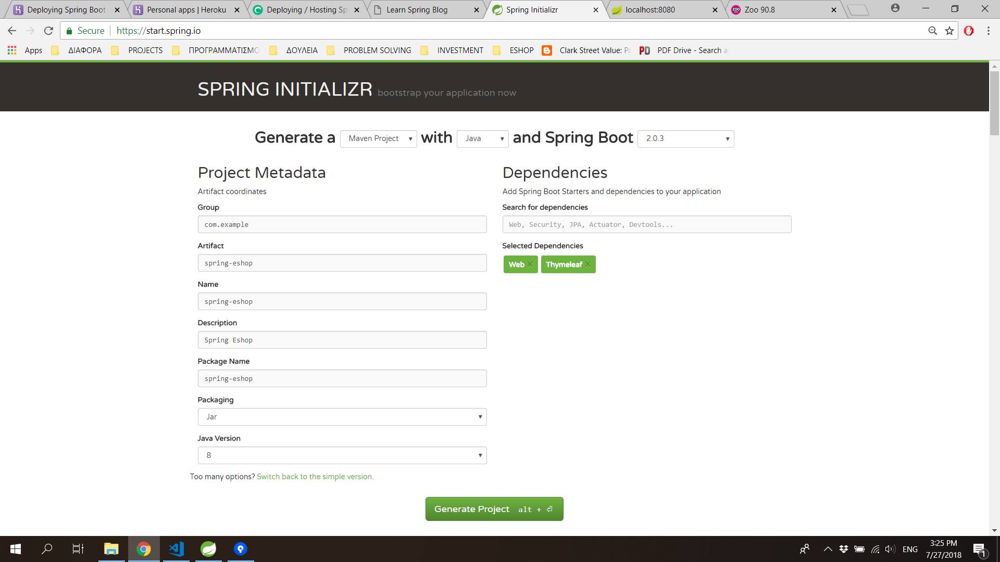
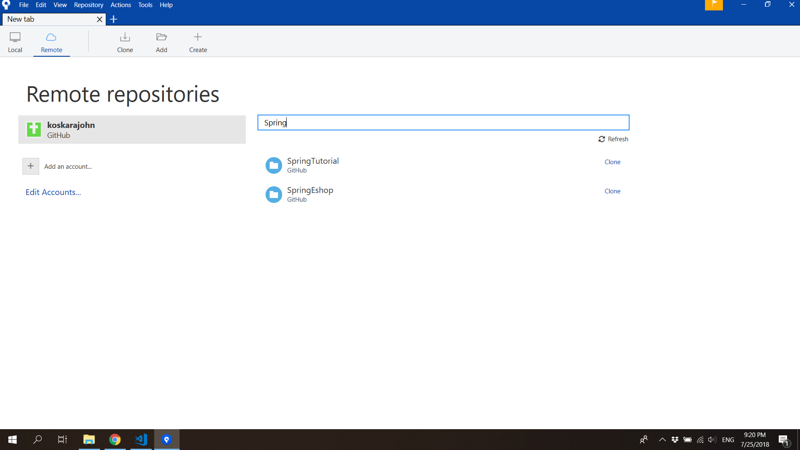
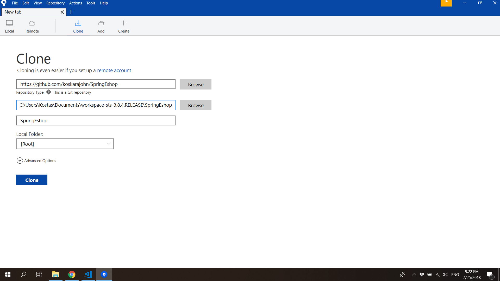
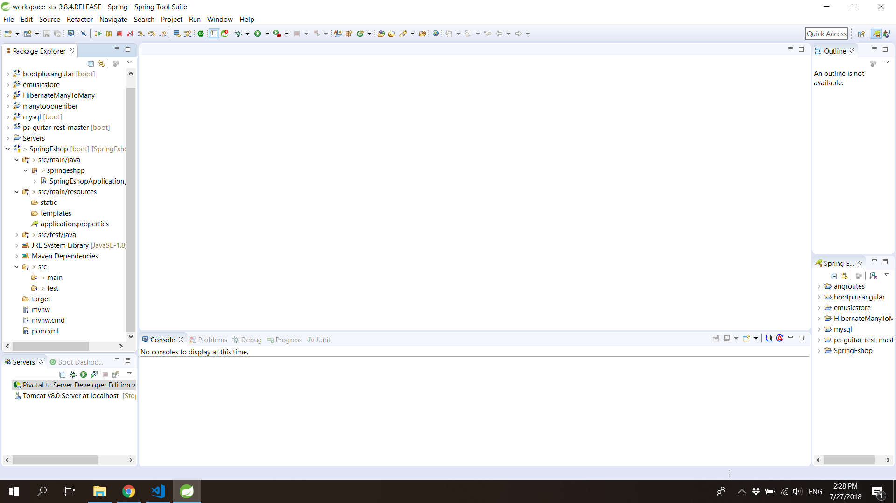

Βημα 3 : Δημιουργια εφαρμογης στη πλατφορμα cloud Heroku
Heroku
To Heroku είναι ένα cloud platform as a service (Paas), το οποίο επιτρέπει στους developers
να αναπτύσσουν, να λειτουργούν και να τρέχουν εφαρμογές αποκλειστικά στο Cloud. Κάνει τη διαδικασία του deployment,
τoυ configuration και της διαχείρσης, όσο πιο απλά γίνονται, επιτρέποντας στους developers, να ασχοληθούν αποκλειστικά
με την ανάπτυξη του κώδικα.
Git
Το Git είναι ένα distributed version control system, το οποίο επιτρέπει στους developer να διαχειρίζονται τον πηγαίο
κώδικα. Το Heroku χρησιμοποιεί το Git, ως το κύριο μέσο για το deployment των εφαρμογών. Όταν δημιουργούμε μια νέα εφαρμογή
στο Heroku, συσχετίζει ένα νέο Git remote, το οποίο συνήθως ονομάζετει heroku, με το τοπικό Git repository για την εφαρμογή.
Για να κάνουμε deploy τον κώδικα, χρησιμοποιούμε το γνωστό git push , αλλά για το heroku remote
git push heroku master
Δημιουργία νέου repository στο github
- Εάν δεν έχετε λογαριασμό στο GitHub, πρέπει να δημιουργήσετε έναν. Οι οδηγίες είναι
εδώ.
- Αφού κάνετε λογαριασμό και login, κάνετε κλικ στο σταυρό πάνω δεξία στην οθόνη, ο οποίος είναι ανάμεσα από μια καμπάνα και την
εικόνα προφίλ σας. Ανοίγει ένα pop-up παράθυρο και πατάτε New repository.
-
Συμπληρώνετε το όνομα του repository στο πεδίο Repository name. Προαιρετικά, μπορείτε να γράψετε και μια
περιγραφή της εφαρμογής. Πατήστε στο κουμπί Create repository, για τη δημιουργία του repository.

Δημιουργία του Spring Project
- Μπορούμε να δημιουργήσουμε το project είτε με το Spring Tool Suite είτε με το Spring Initializr. Σε αυτό το
παράδειγμα, θα χρησιμοποιήσουμε το Spring Initializr, το οποίο είναι μια web εφαρμογή, που δημιουργεί την δομή
του Spring Boot project. Πηγαίνουμε στη σελίδα του Spring Initializr.
-
Πατάμε Switch to the full version, για να εμφανιστούν όλες οι επιλογές. Επιλέγουμε το Maven, για να κάνουμε build
το project. Μετά κάνουμε τις εξής επιλογές :
Group : com.example
Artifact : spring-eshop
Name : spring-eshop
Description : Spring Eshop
Package Name : spring-eshop
Dependencies : Web, , Thymeleaf
Πατάμε το κουμπί Generate Project και κατεβάζουμε το Project σε μορφή zip.

Δημιουργία τοπικού Git Repository
- Αρχικά, πρέπει να κατεβάσετε το Git για Windows
- Για να κάνουμε clone το remote repository τοπικά, θα χρησιμοποιήσουμε το Source Tree, το
οποίο είναι ένα git client για τα Windows. Μπορείτε να το κατεβάσετε εδώ.
- Κάνουμε κλικ στη καρτέλα Remote πάνω αριστερά. Επιλέγουμε το repository SpringEshop και πατάμε Clone.

-
Επιλέγουμε να το κάνουμε clone στο φάκελο workspace του Spring Tool Suite. Σε αυτό τον υπολογιστή ο φάκελος είναι
C:\Users\Kostas\Documents\workspace-sts-3.8.4.RELEASE. Βάζουμε στο path το SpringEshop και πατάμε Clone.

Import του project στο Spring Tool Suite
- Ανοίγουμε το Spring Tool Suite. Πατάμε File -> Import
- Επιλέγουμε το φάκελο Maven -> Existing Maven Projects
- Πατάμε Browse, επιλέγουμε το φάκελο, στον οποίο κάναμε Clone το Repository και πατάμε Finish.
- Αν όλα είναι σωστά, θα πρέπει, να υπάρχει ένα project SpringEshop με το ακόλουθο Structure στο Package Explorer

- Τώρα θα προσθέσουμε κώδικα, ώστε να εμφανίζεται στο browser το μήνυμα "Hello World". Ανοίγουμε το SpringEshopApplication.java
, που είναι στο φάκελο src/main/java -> springeshop και προσθέτουμε αρχικά το annotaion @Controller πάνω από το SpringEshopApplication.
Έπειτα προσθέτουμε την άκολουθο μέθοδο στην κλάση.
@RequestMapping("/")
@ResponseBody
String home() {
return "Hello World!";
}
Μπορείτε να τρέξετε την εφαρμογή τοπικά, κάνοντας δεξί κλικ στο project -> Run As -> Spring Boot App και ανοίγοντας στο browser
το url http://localhost:8080/.
-
Θα κάνουμε push τις αλλαγές στο remote git repository. Ανοίγουμε το SourceTree, επιλέγουμε το SpringEshop από την καρτέλα Local.
Πατάμε Stage All , επιλέγουμε το όνομα του commit, που επιθυμούμε και πατάμε Commit. Μετά πατάμε Push, κάνουμε κλικ στο Local branch
master και πατάμε το κουμπί Push.
Deploy της εφαμογής στο Heroku
- Αρχικά, πρέπει να δημιουργήσετε free account στο Heroku.
- Μετά, πρέπει να κατεβάσετε και να εγκαταστήσετε το Heroku Cli.
- Ανοίγουμε ένα command prompt, πληκτρολογούμε την εντολή heroku login και δίνουμε το email και τον κωδικό.
- Αλλάζουμε directory και πηγαίνουμε στο φάκελο της εφαρμογής με την εντολή C:\Users\Kostas\Documents\workspace-sts-3.8.4.RELEASE\SpringEshop
- Πληκτρολογούμε heroku create springeshop, για να δημιουργήσουμε ένα heroku repository με όνομα springeshop.
- Κάνουμε deploy των κώδικα git push heroku master
- Μπορούμε να ανοίξουμε την εφαρμογή στο url http://springeshop.herokuapp.com/
(αργεί να ανοίξει την πρώτη φορά).